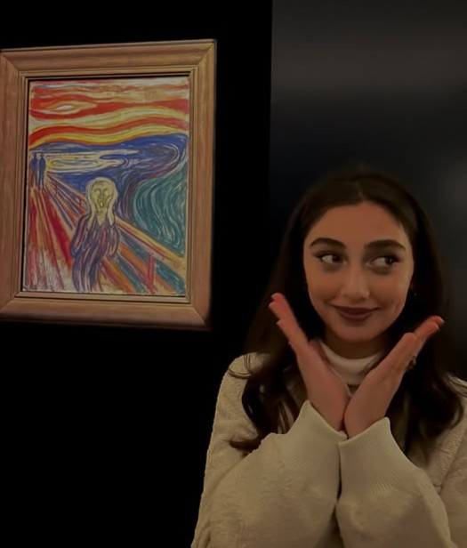
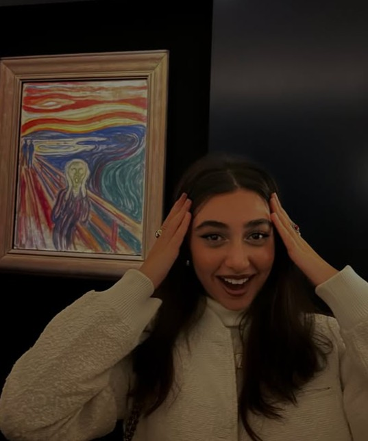

01
ღამის თბილისი ორ ნაწილად იყოფა: შენ და ფონი.
ღამის ქალაქი, სადაც ყველა შუქი ერთი მიმართულებით იყურებოდა.
ფონმა კომპენსაცია ითხოვა: „მე აქ ვბრწყინავ და არავინ მიყურებს.“
ერთი პატარა გვერდი
სანამ გახსნი — ხმა აუწიე
(სულ 40 წამი, გპირდები)
ერთი ჭეშმარიტება, უბრალოდ რომ დაფიქსირდეს
ლამაზი ხარ. მაგრამ ყველაზე ლამაზი მაშინ ხარ, როცა არ იცი, რომ გიყურებ.
— შემოწმებულია. არაერთხელ.
ღამის ქალაქი, სადაც ყველა შუქი ერთი მიმართულებით იყურებოდა.
ფონმა კომპენსაცია ითხოვა: „მე აქ ვბრწყინავ და არავინ მიყურებს.“
მზის ჩასვლა, რომელიც ყურადღების მიპყრობას ცდილობდა და მარცხი იწვნია.
მზე ჩავარდა და მერე ინტერნეტში ეძებდა: „როგორ დავბრუნდები ისე ლამაზად, როგორც ის“.
მთა, ძველი მანქანა და ერთი ადამიანი, რომელმაც ორივეს დეკორაციის სტატუსი მისცა.
ეს მანქანა ორმოცი წელი იდგა უძრავად. ერთი ფოტო და ახლა ჰგონია, ფოტომოდელია.
ბარსელონა, სადაც ტურისტები ღირსშესანიშნაობებს უღებდნენ ფოტოს — ერთის გარდა.
ქურთუკი ლამაზია. მაგრამ არა შენზე ლამაზი. (ბოდიში, ქურთუკო, არაფერი პირადი.)
გაყინული ტბა, სადაც ერთადერთი გამათბობელი კადრში მოხვდა.
მეცნიერებმა ვერ ახსნეს, რატომ დნება ყინული შენს ღიმილზე. მე ვიცი, მაგრამ არ ვამბობ — მიეცით გრანტი.


მუნკმა „კივილი“ დახატა. მე მგონი, ვიცი რატომ.
ცისფერი ცა, რომელიც ფონად დარჩენას დათანხმდა — სხვა არჩევანი არ ჰქონდა.
ამ ფოტოს გამო მეტეოროლოგებმა ახალი ტერმინი შემოიღეს — „ქეთიანი ამინდი“.
მეცნიერულად დადასტურებული
შენზე ფიქრის სიხშირე
სტატისტიკა ღამის ცვლის გარეშე.
გულისცემა, როცა შემოდიხარ
ექიმმა თქვა: „ნორმაა, შეყვარებულია“.
ინტერაქტიული ნაწილი
აი, ეს არის სიმართლე
(ერთ ღილაკს პრობლემები აქვს)
ქეთა,
არ ვიცი, როგორ იწყება ასეთი წერილები. ალბათ უხერხულად — და ეს ნორმალურია.
უბრალოდ მინდოდა, სადმე დამეწერა, რომ შენ გამო ჩვეულებრივი დღეები ჩვეულებრივი აღარ არის. ყველაზე რიგითი საღამო, სადაც შენ ხარ, უკეთესია ყველაზე კარგ საღამოზე, სადაც არ ხარ.
მე გვერდების გაკეთება მასე არ მჩვევია. მაგრამ ვიფიქრე — ყვავილი გაჭკნება, შოკოლადი შეიჭმება, ხოლო ეს აქ დარჩება. და ყოველთვის შეგიძლია გახსნა, როცა დაგავიწყდება, რამდენად საყვარელი ხარ.
მიყვარხარ. უბრალოდ, უპირობოდ, ყოველდღე.
— შენ, და მეტი არავინ ❤